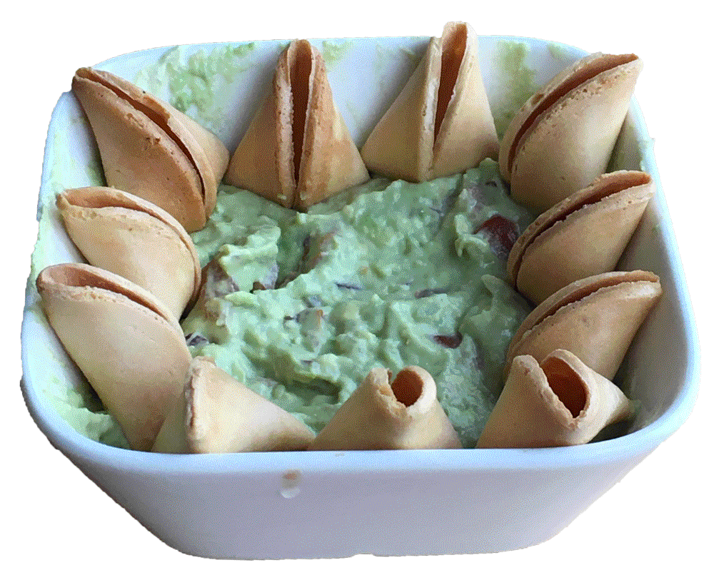

WFFF presents:
Unfolded Truth
Speaker: Kexin Hao
Watch Full Video Here

I shall never conceal our vision and standard. Definitely and beyond all doubt, the mission of WFFF is to contribute to the world repository of fusion food with creativity, knowledge and discipline. It is understood, that we must do our duty to educate our audience to eliminate their misbelief, and to liberate their thought and hands from the yoke of conventional cuisines.
It is long believed that fortune cookie origins from China. Unfortunately, you are all wrong. The fortune cookie is an invented cultural artefact by Asian Americans who ran catering service in Los Angeles back in 20th century. People tried to import fortune cookies to China in late 80s, but failed the business because it was considered “too american”.
Comrades, I used to feel deeply sorry for the fortune cookie being without a real home. But we do not live in the past. Rumours, misbelief and false association must be subjected to criticism. We tend to the future. We want to facilitate the shaping of a new identity of fortune cookie of the new era.
In order to accomplish it, four principles must be observed:
First. We must embrace its quality of having a hybrid background. Let it be said that for more than a century the hard-working asian immigrants have gained an indelible reputation for top diligence and autonomy. Let it be said that a culture of their own has been consolidated. Fortune cookie is neither eastern nor western, but belongs to a life in-between.
Second. Fortune cookies are stamped with the class of a low-standard snack, a freebie. On no account must we take this insult and humiliation. We demand strict enforcement of a new discipline of treating fortune cookies in the kitchen. We will be devoted in waging a tenacious and protracted struggle against the stereotype, through demonstrating how delicious fortune cookies can be.
Third. Be aware, we must never be trapped in the superstition, and fooled by the fake prophecy manufactured by those capitalist. Comrades, the new way of serving fortune cookies is to unfold, deconstruct and sabotage (open fortune cookie and throw away the paper)
Fourth. We must have faith in the true nature of fortune cookies being a perfect base for great dishes, with its splendid, mild taste. On behalf of WFFF, I proudly announce that we have come to discover the greatest combination of food in the world: fortune cookies and guacamole. Herewith I would like to serve you the dish: unfolded truth in guacamole dip.
(plating, serving)
Comrades! A well-disciplined operation, armed with the knowledge, and guided by the core principles — these are the three main weapons with which we have achieved the victory of the dish!
Let me pay high tribute and express my heartfelt gratitude to everyone who have dedicated themselves in the attention to the life cooking buffet!
TGGG presents:
Check-in Checker: A Total Guide
Listen To Full Audio Here
Checker checkes in 3 times:
家
Home
Heim
Grandma, do you know that they call it Chinese Checkers in English. I never knew it has the name Chinese Checkers. I thought it is because it originated in China — that would make sense for us not calling it Chinese Checkers. It is like we call pasta “Italian noodle” and “baguette “french stick” in Chinese but Italians or French would never do so. But you know? Chinese Checkers is not from China but from Germany. An American gave it this name because it would make a better sale by sounding oriental and exotic. In Chinese we call it Hop Chess, because the chess hops.
Equipment
Equipment one: game board
The Chinese Checkers board is in the shape of a six pointed star. It is constructed by dots and lines. Dots are connected by lines. Every point of the star is a triangle consisting of 15 dots. The triangles differentiate with each others by colours.
Equipment two: pegs
Each player has 15 pegs. Pegs are with different colours.
Remember those marbles?
Those colourful, glass balls.
Our game board was a hollow plastic stage with holes on top. We can easily rest those marbles halfway inside the holes.
We also had another set. We had a piece of soft plastic sheet as game board, and colourful plastic cones as pegs.
I got mine this time from a thrift store here. The game board is a cardboard you can fold to half. Small pegs are made of wood. “Halma” — the game’s original name, meaning “jump” in greek, is written on the box.
Preparation
Chinese Checkers can be played by two, three, four or six players. In a two-player game, players place their pegs on the dots in the triangles, that oppose each other. They choose pegs with different colours.
We have played so much. But it is hard to position the events in relations. What were we doing before? What after? How did we start? When was it, what year? We always had plenty of time. You still do. The days felt so long that we had nothing else to do than playing a next round. I had 65% of win rate. The mild uncertainty made me addicted. Sometimes you surprised me with a tricky tactic you probably hadn’t noticed until you were winning.
But grandma, can you believe that? Since I moved here, I have never lost the game. You are still the person who defeated me the most.
Objective
The objective of the game is to be the first to move all 15 pegs across the board and into the opposite triangle. In a two-player game, each player races their pegs to occupy the triangles where the opponent starts.
Grandma, how are you doing? I am still very busy, as usual. The last time I played this game was late November last year. In my living room with a friend, for only one round. It was late and he had to go. Once I played it with a friend and we paused it because we had other things to do. And we never went back to the game. The chess remained the same on the kitchen table for like a week.
I need a marathon of Chinese Checkers, like the old days, you know, spending the whole afternoon with those little marbles, not speaking a word. There was only the sound when marbles knocked.
Rules
Rule 1. Players take turns to move a single peg of their own colour.
Rule 2. Move: Players can move a peg to an adjacent empty dot, but not further, in any of the six directions.
Rule 3: Hop: Players can hop over other pegs. Each hop must be over an adjacent peg of any colour and to an empty dot directly beyond it, in any of the six directions. Hops can be multiple in one go.
Rule 4: Fast pace: a peg may hop over a non-adjacent piece. A hop consists of jumping over a distant piece (friendly or enemy) to a symmetrical position on the opposite side, in the same line of direction.
Rule 5: Pegs are never removed from the board. Pegs never go outside the boarders.
and when the marbles knocked,
all of them, massively, rolling on the game board,
we would switch the colours and
the sunny afternoon would restart.
And it would past
as slow as how the pegs lagged
and as slow as how our clock moved when you ever gazed at it.
Until it stopped
after 36 years of running.
The one, the quartz clock dad bought in 1984 with his first salary.
I used to beg it to just make it hurry a little bit.
It actually had been running like an athlete, grandma,
Its paces were fast enough to fool us,
It raced towards an end nobody would know,
wanting to outpace.
And now it decided to take a break I see.
But it was all too late grandma.
It had done too many rounds without knowing
that it was exhausted.
So had we.
So had the marbles.
As they knocked,
all of them, massively, rolling on the game board,
we would switch the colours and
the sunny afternoon would restart.
NEOstalgic Table
Woven into the fabric of memory,
nostalgia is the simultaneous sweetness and the bitterness
of wanting to return to another place or time.
It is a longing for a home that no longer exists or has never existed.
Nostalgia is a sentiment of loss and displacement,
but also a romance with one's own fantasy.
NEOstalgia is a movement that comes from nostalgia but wants to propose a new one. It deals with the inability of homecoming and tries to activate a new way of homecoming.
Homecoming Object 1: Fortune Cookie
made in U.S.A by Asian American
labeled as Chinese Snack
longs for a home of whom are displaced (diaspora) and another home of whom fantasise the displacement (exotism)
Homecoming Object 2: Chinese Checker
originated in Germany
name given by an American Company
labeled as Chinese game
longs for a home of whom fantasise the displacement (exotism)
Once I ordered Chocomel aside my meal at Eazie, the notorious asian fast food restaurant around the corner. A fortune cookie was served aside the cup of Chocomel. This snack perfectly fit in as a snack to a sweet hot dutch drink, also as an auratic snack that explains the attempt of some cultural fantasy: “Right, you are eating supposably Chinese, and we serve you what supposably are Chinese.”
I do not remember having any through my life in China. Nevertheless, at that time I was so convinced that I received a Chinese snack, while looking at the Chinese characters and some dragon illustration on the golden-looking package.
This snack is trying to please everyone — it has the fortune told in English, Dutch, French and Spanish on the little paper. British, American, Dutch, French and Spanish and people all around the world gets their lucky freebee, indulging themselves in the golden crispy oriental dream.
There is someone left out whom Fortune Cookies forgot to please — the Chinese. The Chinese person is left there confused: he doesn’t even know about the most “Chinese” thing. He does not read a single word from inside, either.
When I needed to introduce a game in a class, I chose a chess game that I used to play a lot with my grandma. It is called Hop Chess in Chinese. I had to google the English name for it. It turned out as a surprise — it has the name “Chinese checkers” in English. I did not know about it at all. Everyone seemed convinced in my class. “You were playing it in China. It originates in China. Yes.”
Yes, that is why we would never call it Chinese checkers. It is like we calling pasta “Italian noodle” and baguette “French stick”. But the Italian or French would never do so.
But I was very confused that I had never heard about its Chinese origin.
The fortune cookie and the Chinese checker want to come home. Me too. I want to come home with them.
The movement is directed by two organisations:
WFFF (World Fusion Food Foundry) and
TGGG (Total Guide to Geography Gameplay).
WFFF × TGGG announcement
Food and game.
the gigantic domain of meaning and interpretation,
the enormous archive of personal stories, history, politics and cultural identity.
the overloaded signifier, urging the reconstruction within.
the representative of us all, awaiting the public speech.
We invent recipes of fusion food.
We present guidelines of geography games
We strictly adhere the following methods:
to investigate single units in food and games of a culture;
to eliminate misbelief which they carry;
to reshape new identities that they are bonded with.